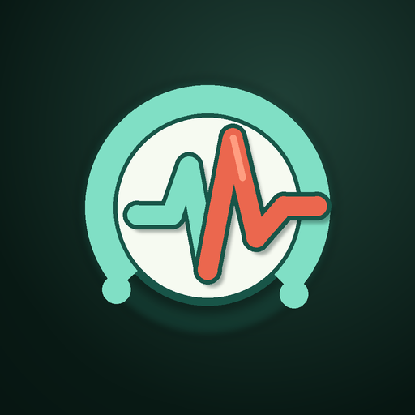
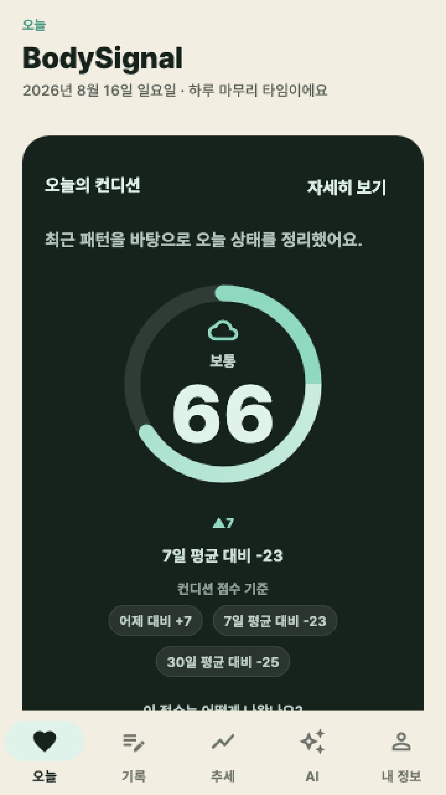

BodySignal
스트레스 & 바이오 회복 기록
피로는 막연한 기분이 아닙니다. BodySignal(바디시그널)은 심박변이도(HRV)와 수면 같은 생체 신호에 일상의 습관과 감정 기록을 연결하여, 내 몸의 컨디션이 왜 변화했는지 한눈에 이해하도록 돕습니다.

Core features
신체 데이터를 통찰로 바꾸는 기술
단순한 숫자의 나열이 아니라, 오늘의 휴식과 내일의 에너지를 계획할 수 있는 명확한 기준을 제시합니다.
HRV 기반 실시간 스트레스 & 회복 스코어
자율신경계 균형을 반영하는 심박변이도(rMSSD/SDNN)와 안정시 심박수(RHR), 수면 효율을 종합해 0~100점의 신체 컨디션 스코어를 온디바이스로 정밀 산출합니다.
모닝 브리핑 & 주간 회복 리포트
기상 직후 밤사이의 수면 회복도와 오늘의 활동 권장량을 브리핑하고, 한 주간의 자율신경계 누적 피로도와 스트레스 추이를 알기 쉽게 시각화합니다.
생체 신호 이상 징후 (Window Alert)
개인 고유의 생체 베이스라인을 구축하여, 급격한 HRV 저하나 비정상적인 스트레스 피크 등 번아웃 징후를 실시간 감지하고 적절한 휴식을 권고합니다.
습관·감정 다이어리 & 상관관계 분석
카페인, 음주, 야식, 운동, 두통/피로 증상 및 감정 상태를 간단히 기록하면 생체 신호 데이터와 교차 분석하여 개인별 컨디션 저하 원인을 규명합니다.
미주신경 자율신경 호흡 가이드
긴장되거나 스트레스 지수가 치솟았을 때, 심박수를 빠르게 안정시키고 부교감신경을 자극하는 시각적 4-7-8 및 박스 호흡 운동 세션을 제공합니다.
BYOK AI 코치 & 100% 온디바이스
사용자 개인 API Key(선택)를 안전하게 연동해 민감한 건강 데이터를 외부 서버에 맡기지 않고 나만의 로컬 맞춤형 회복 가이드를 받아볼 수 있습니다.
Specifications
앱 사양 및 정보
| 앱 이름 | BodySignal (바디시그널 - 스트레스 & 바이오 회복 기록) |
|---|---|
| 출시 지역 | 국내(한국) 출시 완료 · 글로벌 순차 런칭 예정 |
| 가격 | 100% 무료 (Free) · 구독료나 유료 결제 없이 모든 생체 분석 및 호흡 가이드 기능 무료 제공 |
| 개발사 | 79's Labs (친구들랩스) |
| 지원 플랫폼 | Android 8.0 (Oreo) 이상 (Google Health Connect 연동) |
| 생체 분석 지표 | 심박변이도(rMSSD, SDNN), 안정시 심박수(RHR), 수면 단계 및 지속 시간, 일중 스트레스 점수(0~100) |
| 연동 웨어러블 | 갤럭시 워치(Galaxy Watch), 핏빗(Fitbit), 가민(Garmin), 스마트링 등 Health Connect 호환 기기 |
| 컨디션 관리 도구 | 모닝 브리핑, 주간 회복 리포트, 이상 징후 알림(Window Alert), 자율신경 호흡 세션, 상관관계 다이어리 |
| 데이터 보관 방식 | 100% On-Device 로컬 암호화 데이터베이스 (Drift/SQLite) 저장, 외부 서버 전송 없음 |
FAQ
자주 묻는 질문
스마트워치가 반드시 있어야 하나요?
심박변이도(HRV)와 수면 자동 측정을 위해서는 스마트워치나 밴드(갤럭시 워치, 핏빗 등)가 권장되지만, 수동 컨디션 및 습관 다이어리 기록은 기기 없이도 가능합니다.
Health Connect는 어떻게 연결하나요?
앱 설치 후 최초 권한 안내에 따라 Google Health Connect 권한을 허용하시면, 기존에 측정된 헬스 데이터가 안전하게 연동됩니다.
측정된 점수는 의학적 진단인가요?
아닙니다. BodySignal은 질병의 진단이나 치료 목적이 아닌 일상적인 웰니스 및 컨디션 관리를 위한 통계 지표를 제공합니다.
내 건강 데이터가 외부로 공유되나요?
아닙니다. 79's Labs는 온디바이스 철학에 따라 사용자의 어떠한 건강 정보도 외부 서버로 전송하거나 수집하지 않습니다.